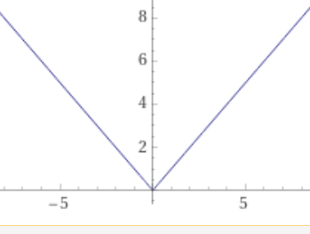
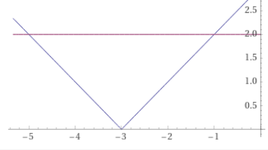

Itseisarvo- ja juuriyhtälöt
Sisällys
Itseisarvo- ja juuriyhtälöt¶
Luvun itseisarvo¶
Luvun itseisarvo
Reaaliluvun itseisarvo (engl. absolute value) on luvun etäisyys origosta lukusuoralla.
Se on luvun etumerkitön arvo. Luvun a itseisarvoa merkitään |a|. Itseisarvon muodollinen määritelmä on
\(
\left| a \right|=
\begin{cases}
\hspace{3mm}a, kun\hspace{2mm} a\ge 0\\
-a,kun\hspace{2mm} a\lt 0
\end{cases}
\)
Positiivisen luvun ja nollan itseisarvo on luku itse, esim. |3| = 3.
Negatiivisen luvun itseisarvo on luvun vastaluku, esim. |-5| = 5
Lukujen a ja b etäisyys lukusuoralla
Lukujen a ja b etäisyys lukusuoralla voidaan esittää muodossa |a - b|
\(\text{ a }\overset{|a-b|}{\overbrace{\text{______} }}\text{ b}\)
Itseisarvofunktio¶
Itseisarvofunktio y = |x|
Itseisarvofunktion määritelmä on \( \left| x \right|= \begin{cases} \hspace{3mm}x, kun\hspace{2mm} x\ge 0\\ -x,kun\hspace{2mm} x\lt 0 \end{cases} \)
Sen kuvaaja koostuu kahdesta puolisuorasta ao. kuvan mukaisesti.

Itseisarvoyhtälön ratkaisutapoja¶
Itseisarvoyhtälöitä ratkaistaan jakamalla ne useammaksi yhtälöksi, jotka ovat voimassa eri osaväleillä.
Eräissä tapauksissa niitä voi ratkaista myös korottamalla yhtälön puolet toiseen potenssiin tai käyttämällä erotuksen itseisarvon tulkintaa lukujen välimatkana lukusuoralla.
Graafinenkin ratkaisu on mahdollinen.
Esim. Ratkaise \(|x + 3| = 2\) ym. ratkaisutapoja käyttäen.
Vastaus x = -5 tai x = -1
Tapa1. Yhtälön jakaminen useaksi yhtälöksi
Korvataan |x + 3| eri lausekkeilla eri osissa lukusuoraa \( \left| x + 3 \right|= \begin{cases} \hspace{3mm}x +3, kun\hspace{2mm} x\ge -3\\ -x-3,kun\hspace{2mm} x\lt -3 \end{cases} \)
Saadaan kaksi yhtälöä:
\( \begin{cases} \hspace{3mm}x + 3 =2, kun\hspace{2mm} x\ge -3\\ -x-3 = 2,kun\hspace{2mm} x\lt -3 \end{cases} \)
Ylemmästä yhtälöstä saadaan juuri x = 2-3 = -1, alemmasta -x = 2+3 , josta saadaan toiseksi juureksi x = -5
Tapa2. Yhtälön neliöinti
Yhtälössä |x+3|=2 molemmat puolet > 0, joten neliöimällä saadaan yhtäpitävä yhtälö
\((x+3)^2 = 4\)
Sulut poistamalla saadaan 2. asteen yhtälö
\(x^2 + 6x + 5 = 0\)
Yhtälön juuret ovat -5 ja -1
Tapa3. Etäisyystulkinnan käyttö
Yhtälö voidaan kirjoittaa |x- (-3)| = 2, jonka geometrinen tulkinta on
”x:n etäisyys -3:sta on 2”. Ehdon toteuttavat lukusuoran luvut -5 ja -1.
Tapa4. Graafinen ratkaisu
Piirretään samaan kuvaan yhtälön molemmat puolet |x+3| ja 2. Yhtälön ratkaisu löytyy leikkauspisteiden x-koordinaateista, jotka ovat -5 ja -1

Juuriyhtälöt¶
Tarkastellaan tyyppiä \(\sqrt{P(x)}=Q(x)\) olevia juuriyhtälöitä. Niiden ratkaisemisessa voidaan käyttää sääntöä \(a = b => a^2 = b^2\)
Käytännössä tämä tarkoittaa, että jos \(x_0\) on yhtälön \(\sqrt{P(x)}=Q(x)\) juuri, niin \(x_0\) on myös yhtälön \(P(x)={Q(x)}^2\) juuri.
Neliöidyllä yhtälöllä voi olla myös juuria, jotka eivät ole alkuperäisen yhtälön juuria. Tämä johtaa seuraavaan algoritmiin juuriyhtälön ratkaisemiseksi.
Tyyppiä \(\sqrt{P(x)}=Q(x)\) olevan juuriyhtälön ratkaiseminen
Korota yhtälön molemmat puolet toiseen.
Ratkaise yhtälön \(P(x)={Q(x)}^2\) juuret
Sijoita kohdassa 2 saadut juuret alkuperäiseen yhtälöön selvittääksesi mitkä juurista
ovat alkuperäisen yhtälön ratkaisuja.
Ratkaise yhtälö \(\sqrt{x+1}= x - 5\)
Vastaus: x = 8
Ratkaisu
Korotetaan molemmat puolet toiseen ja sievennetään yhtälöä
\((x+1) = (x-5)^2\)
\(x+1 = x^2 - 10x + 25\)
\(0 = x^2 - 11x + 24\)
x=3 tai x=8
Tarkistetaan, mitkä neliöidyn yhtälön ratkaisuista ovat alkuperäisen yhtälön ratkaisuja.
\(\sqrt{3+1}= 3 - 5 \hspace{4mm} 2 = -2\) EPÄTOSI
\(\sqrt{8+1}= 8 - 5 \hspace{4mm} 3 = 3\) TOSI
Tehtävän ratkaisu on siten x = 8.
Usein juuriyhtälöt tulevat vastaan suureyhtälöiden ratkaisun yhteydessä. Tällöin useimmiten tarkistusta ei tarvita.
Ratkaise g yhtälöstä \(T = 2\pi \sqrt{\frac{r}{g}}\)
Vastaus: \(g = \frac{4{\pi}^2r}{T^2}\)
Ratkaisu
Korotetaan molemmat puolet toiseen ja ratkaistaan g
\(T = 2\pi \sqrt{\frac{r}{g}}\)
\(T^2 = \frac{4{\pi}^2r}{g}\)
\(g T^2 = 4{\pi}^2 r\)
\(g = \frac{4{\pi}^2r}{T^2}\)